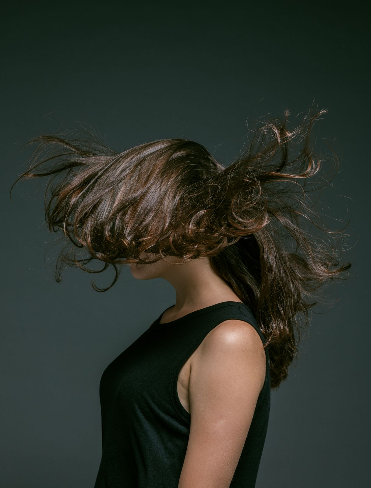

Laminazione
Da 65 €
Distende e nutre la fibra senza bisogno della piastra. Dopo una seduta i capelli sono più lucidi, si districano subito e restano morbidi per sei settimane. Adatta anche ai capelli colorati.